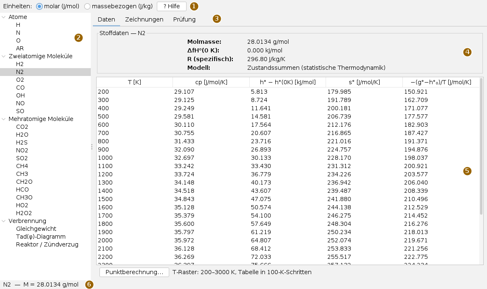
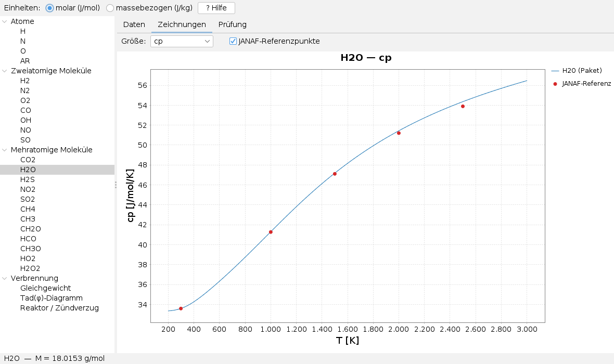
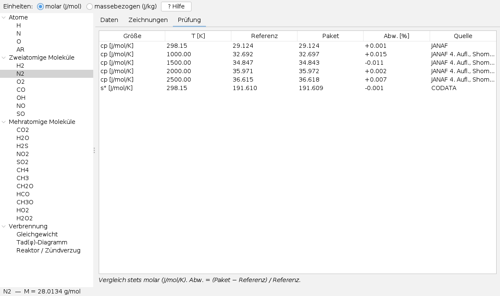
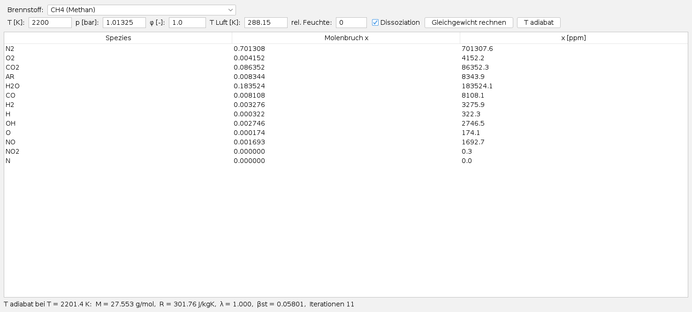
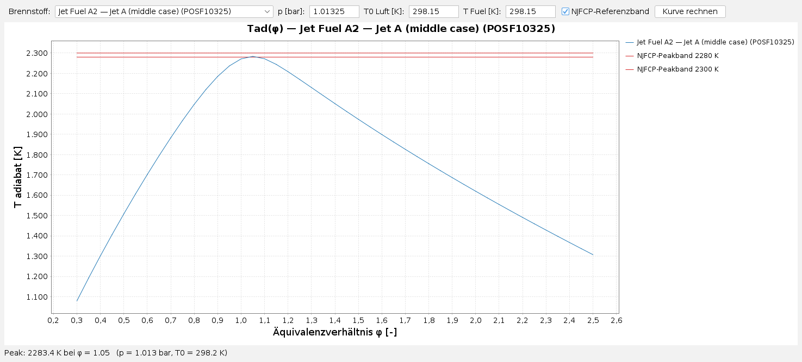
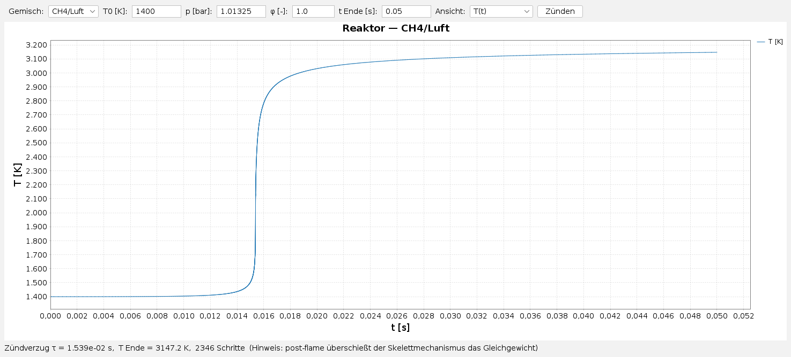

Thermo Properties bedienen
Bedienseite, Stand 05.10.2026. Wie man die Stoffwerte einer Spezies als Tabelle und Diagramm ansieht, mit der Literatur vergleicht und mit den drei Werkzeugen ein Verbrennungsgleichgewicht, eine Flammentemperaturkurve und einen Zündverzug rechnet. Die Bilder sind Bildschirmfotos der App.
Das Fenster
Die App öffnet man im Menü Anwendungen mit Thermo Properties öffnen… oder mit Alt+T. Sie öffnet keine Dateien; alles, was sie zeigt, rechnet sie aus dem Thermodynamikmodul.

Der Baum gliedert die 23 Spezies in Atome, Zweiatomige Moleküle und Mehratomige Moleküle; darunter steht die Gruppe Verbrennung mit den drei Werkzeugen. Ein Klick auf einen Eintrag zeigt rechts seine Karte. Die Karte einer Spezies wird beim ersten Klick gerechnet und dann gemerkt; der zweite Klick zeigt sie sofort. Die Trennlinie zwischen Baum und Karte lässt sich verschieben.
Einheiten und Hilfe
Oben wählt Einheiten: zwischen molar (J/mol) und massebezogen (J/kg). Die Wahl gilt sofort für alle schon geöffneten Spezies: Tabelle, Diagramm und Punktberechnung rechnen um. Die Enthalpie steht in kJ/mol bzw. kJ/kg, Wärmekapazität, Entropie und Giauque-Funktion in J/(mol·K) bzw. J/(kg·K). Der Reiter Prüfung vergleicht immer molar.
? Hilfe zeigt die Dokumentation des Thermodynamikmoduls an Stelle der Karte; Schließen führt zur vorigen Karte zurück, ebenso ein Klick auf einen anderen Eintrag im Baum.
Daten einer Spezies
Der Reiter Daten zeigt oben die Stoffdaten: Molmasse, Bildungsenthalpie bei 0 K, spezifische Gaskonstante und das Modell. Darunter die Wertetabelle von 200 bis 3000 K in Schritten von 100 K mit cp, h° − h°(0K), s° und −(g°−h°₀)/T. Gerechnet wird intern auf einem Raster von 25 K; exakt aus den Zustandssummen an den Stützstellen, dazwischen kubisch interpoliert.
Punktberechnung… rechnet dieselben vier Größen bei einer frei gewählten Temperatur, direkt aus den Zustandssummen und ohne Interpolation. Temperatur eintragen (Vorgabe 1000 K, erlaubt 50 bis 6000 K, Komma oder Punkt) und Berechnen drücken. Die Punktberechnung öffnet ein eigenes kleines Fenster, das man vor dem Weiterarbeiten wieder schließt.
Zeichnungen

Im Reiter Zeichnungen wählt Größe: eine der vier Größen über der Temperatur. JANAF-Referenzpunkte legt die Literaturwerte darüber; hinterlegt sind sie nur für die Wärmekapazität, bei den anderen Größen bleibt das Kästchen ohne Wirkung. Das Mausrad über dem Diagramm zoomt.
Erst die hohen Temperaturen sagen etwas. Bei 300 K stimmt fast jedes Modell, weil die Schwingung dort kaum beiträgt. Ob die Anharmonizität richtig erfasst ist, zeigt sich oberhalb von etwa 1500 K – im Bild etwa am Punkt bei 2500 K.
Prüfung

Der Reiter Prüfung stellt jeden hinterlegten Referenzwert neben den gerechneten: Größe, T [K], Referenz, Paket, Abw. [%] als (Paket − Referenz) / Referenz und die Quelle. Ist eine Quelle zu lang für die Spalte, zeigt das Verbreitern der Spalte den vollen Text. Für Spezies ohne Referenzwerte steht hier nur ein Hinweis.
Gleichgewicht

- Unter Verbrennung den Eintrag Gleichgewicht wählen.
- Brennstoff: Methan, Wasserstoff oder eines der neun Kerosine des NJFCP-Programms.
- T [K], p [bar], φ [-] (Äquivalenzverhältnis, 1 = stöchiometrisch), T Luft [K] und rel. Feuchte (0 bis 1) eintragen. Dissoziation abgeschaltet rechnet ohne Zerfall der Produkte.
- Gleichgewicht rechnen rechnet bei der eingetragenen Temperatur. T adiabat sucht erst die adiabate Flammentemperatur und rechnet dort; das Feld T [K] wird dabei nicht beachtet.
Die Tabelle nennt die Molenbrüche aller Spezies über 10−12, auch in ppm. Die Zeile darunter nennt Temperatur, Molmasse und Gaskonstante des Gemischs, Luftzahl λ, stöchiometrisches Brennstoff-Luft-Verhältnis βst und die Zahl der Iterationen. Der erste Aufruf baut die Tabellen der Spezies auf und dauert bis etwa eine Minute; ein Wartehinweis liegt so lange über der Karte. Ungültige Eingaben meldet die Ergebniszeile.
Flammentemperatur über φ

Das Werkzeug Tad(φ)-Diagramm rechnet die adiabate Flammentemperatur für φ von 0,3 bis 2,5 in Schritten von 0,05, immer mit Dissoziation und trockener Luft. Eingaben sind Brennstoff:, p [bar], T0 Luft [K] und T Fuel [K], dann Kurve rechnen. Die Zeile unter dem Diagramm nennt das Maximum und wo es liegt.
NJFCP-Referenzband zeichnet die Linien bei 2280 und 2300 K, in denen das Maximum der Kerosine nach dem NJFCP-Bericht liegt. Gezeigt wird das Band nur, wenn ein Kerosin gewählt ist und die Eingaben nahe 1 atm und 298 K liegen, denn nur dafür gilt es.
Reaktor und Zündverzug

Das Werkzeug Reaktor / Zündverzug rechnet einen adiabaten Reaktor bei konstantem Druck. Gemisch: CH4/Luft oder H2/Luft; dazu T0 [K], p [bar], φ [-] und t Ende [s], dann Zünden. Ansicht: schaltet nach dem Rechnen ohne neue Rechnung zwischen T(t) und Spezies X(t) um, den Molenbrüchen von CH4, H2, O2, H2O, CO2, CO und OH.
Die Zeile unter dem Diagramm nennt den Zündverzug τ, die Endtemperatur und die Zahl der Zeitschritte; zündet das Gemisch im Zeitfenster nicht, steht das dort. Die Kinetik ist ein Skelettmechanismus: Hinter der Flamme schießt die Temperatur über das Gleichgewicht hinaus, im Bild bis über 3100 K, während das Gleichgewicht bei rund 2200 K liegt. Für den Zündverzug ist das ohne Belang, für Endzustände nicht.
Was gespeichert wird
Beim Sichern des Arbeitsbereichs merkt sich die App die gewählte Spezies, die Einheitenwahl und den offenen Reiter und stellt sie beim nächsten Start wieder her. Die Eingaben der Verbrennungswerkzeuge werden nicht gespeichert. Ausgaben in Dateien hat die App nicht.
Tastatur und Maus
Alt+T öffnet die App. Im Baum wählen die Pfeiltasten den nächsten Eintrag, der sofort angezeigt wird. Das Mausrad zoomt die Diagramme. Weitere Tastenkürzel hat die App nicht.
Grenzen
- Die Wertetabelle reicht von 200 bis 3000 K; darüber hinaus rechnet nur die Punktberechnung (bis 6000 K).
- Referenzpunkte im Diagramm gibt es nur für die Wärmekapazität.
- Die Werkzeugkarten setzen ihre Eingaben in eine Zeile. In einem schmalen Fenster stehen die Knöpfe am Ende außerhalb des sichtbaren Bereichs; dann das Fenster verbreitern oder den Baum schmaler ziehen.
- Der erste Aufruf jedes Verbrennungswerkzeugs baut Rechentabellen auf und braucht einige zehn Sekunden.
Was die App kann und worauf sie aufbaut, steht in der Übersicht; die Physik dahinter in thermo.